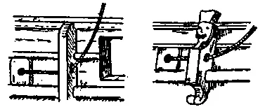
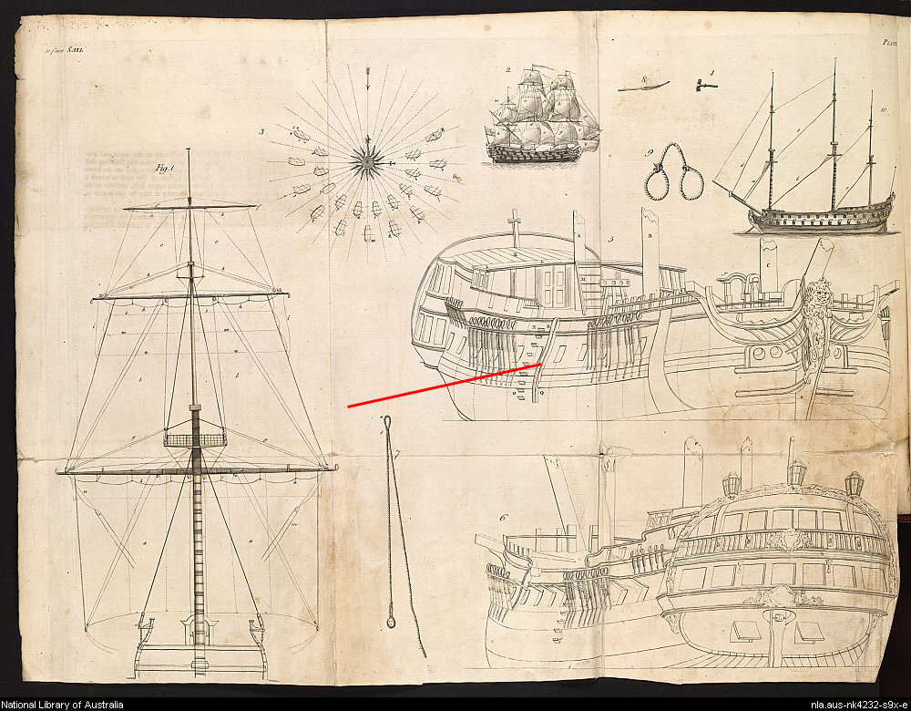
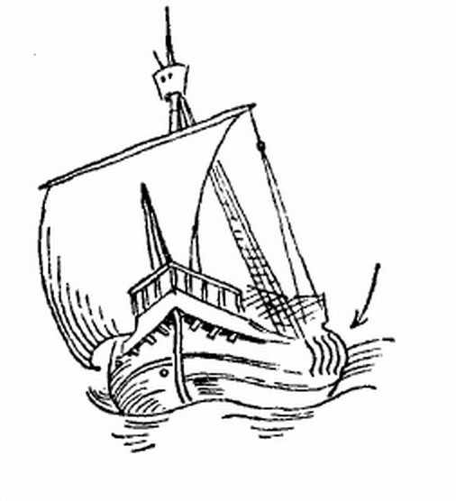

Совершим экскурсию по кораблю, пытаясь понять назначение всех показанных художником деталей. Несмотря на то, что каракка по всей видимости построена на верфи Северной Европы, она сохранила в себе многие характерные признаки средиземноморского парусника, причем не только в конструкции корпуса, но и в оснастке корабля, его рангоуте и такелаже. Исполнитель гравюры сознательно отходит от законов перспективы, чтобы показать нам все особенности конструкции корабля: хотя корпус повернут к нам кормой на три четверти, его изображение представляет собой как бы развертку на плоскости, и мы видим усиленные брусья обшивки – вельсы –обрубленными под прямым углом на форштевне. Последовав далее в корму, увидим мощный якорный клюз, а вслед за ним – верхний изогнутый вельс (бархоут), начинающийся сразу под носовой надстройкой – форкастелем. Следующий элемент конструкции корпуса – галс-кламп (Halsklampe по-немецки, chess-tree по-английски и dogue d’amure – по-французски). Честно говоря, я не встречал его изображение на более ранних картинках. Галс-кламп – это костыль из крепкого дуба, прикрепленный к борту корабля в верхней его части, в котором сделано отверстие для прохода особой корабельной снасти – грота-галса.

Галс-клампы
Посмотрев изображение этой снасти на гравюре, обратимся к ее описанию у А. Глотова:
Грота-галс – Длинная веревка, продетая срединою своею в нижний угол паруса особаго рода петлею, один ее конец называется грота-галс, который проходит в диру в борту корабля, близ бака прорубленную, куда вставляются вделанные в дерево два медных роульса, (или катка), что вообще называется галс-кламп; чрез оный проходя, грота-галс идет на палубу, где вытянутый или ослабленный крепится за крюсов, или большаго роду планку, укрепленную близ клампа в борт корабля. Другой же конец сей веревки, идущий от онаго же угла паруса, именуется грота-шкот.
А.Глотов Изъяснение принадлежностей к вооружению корабля, 1816 с. 180
На нашей гравюре паруса свернуты, поэтому мы не можем увидеть крепление грота-галса к галсовому углу паруса и работу этой снасти –оттягивание нижнего наветренного (галсового) угла паруса в направлении вниз и к носу. Но геометрия снасти изображена предельно четко.
Продвигаясь далее к корме обнаружим группу брусьев необычной формы.
Сделаем несколько замечаний по терминологии. На английском языке эти брусья обычно называют skids. Впрочем, Ксавьер Пастор в своей книге о кораблях Колумба называет их futtock riders, однако такое название встречается значительно реже. Самое лучшее определение термина skids дает, по-моему Фалконер в своем авторитетном словаре:
SKIDS, or SKEEDS, are long compassing pieces of timber, formed so as to answer the vertical curve of a ship's side. See Q R, fig. 5. plate IX. They are notched below so as to fit closely upon the wales; and as they are intended to preserve the planks of the side, when any weighty body is hoisted or lowered, they extend from the main wale to the top of the side; and they are retained in this position by bolts or spike-nails.
SKIDS, или SKEEDS – длинные изогнутые штуки, подогнанные к вертикальной кривизне корабельного борта. См. Q R, рис.. 5. лист IX. На их нижнем конце сделаны вырезы, чтобы плотно встать на вельсы; они предназначены для предохранения обшивки борта, когда поднимают или спускают тяжелый груз. Они простираются от главного вельса до верхней точки борта и прикрепляются болтами или нагелями.
Для наглядности приведем указанный в тексте рисунок, где красная линия. указывает на изучаемый нами брус.

На русский язык термин skids обычно переводят словом фендерс , следуя, видимо, определению, взятому из словаря Бутакова (Словарь морскихъ словъ и реченiй, 1837): "Skids or skeeds – Фендерсы no кораблю."
Но в русском морском языке термин фендерс имеет и другое значение, а именно кранец, отпорный шест (Вахтин, Самойлов). Поэтому при употреблении этого термина надо всегда соблюдать осторожность, поясняя, если нет ясности из контекста, какой смысл мы закладываем в это слово.
Еще одно изображение подобных же фендерсов можно найти в первом английском переводе библии (т.н. Coverdale's Bible), изданном в 1535 году

Изображение фендерсов на рисунке из Coverdale's Bible (издание 1535 года)
Следуя дальше к корме, мы дойдем до крепления вант и до русленя. Но о них мы поговорим в следующий раз.